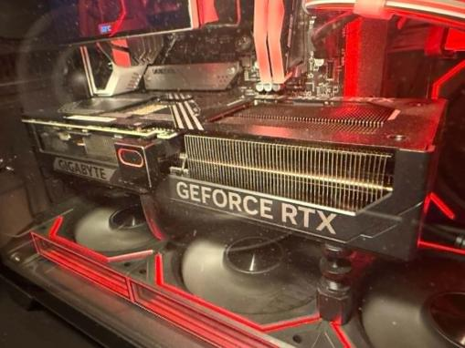
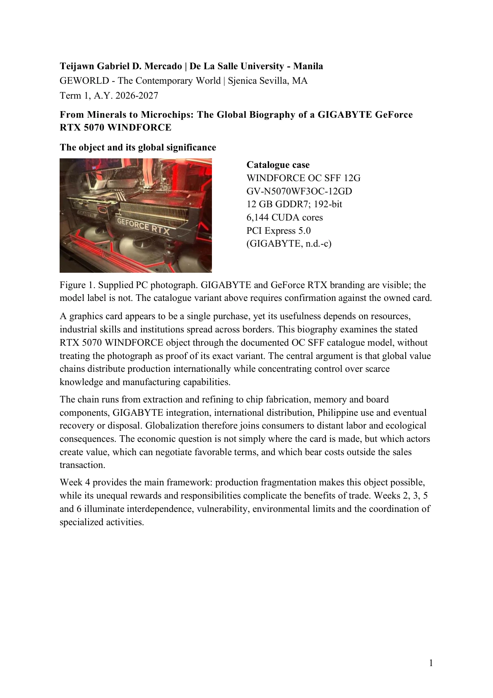

GEWORLD / MIDTERM SUBMISSION
From minerals
to microchips.
The global biography of a
GIGABYTE GeForce RTX 5070 WINDFORCE
One graphics card. A world of connections.
Tracing the resources, people, and systems behind the technology on our desks.
OBJECT IN FOCUS 01 / 01

+
+
A GLOBAL NETWORK.A SINGLE OBJECT.
Original photograph from the paper. The exact card variant is not verified by the image.
01 / THE BIGGER PICTURE
Built across borders.
A visual guide to the paper’s central themes.
02 / SUBMISSION ARCHIVE
The documents.
Read here. Keep a copy.
Both original PDFs, in one place.

The preview could not load. Open the original PDF.
Accessible page text +
Extracted from the selected page. Figures and screenshots are preserved in the visual preview and original PDF.
A CONNECTED WORLD, IN ONE OBJECT.